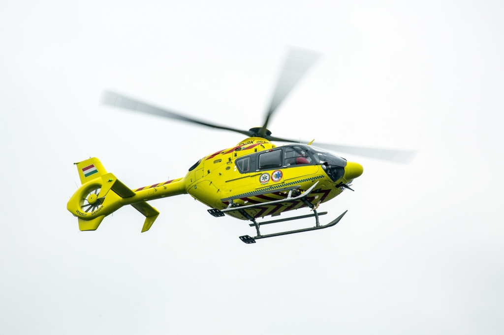

0-15 perc
Kivonulási idő riasztás után

A légimentés szolgálatában — hogy a segítség perceken belül a helyszínre érjen, és mások is túlélhessék.
Légimentés
A légimentés a sürgősségi ellátás leggyorsabb formája: a helikopter néhány perc alatt a helyszínre ér, ahová a földi mentés csak jóval később jutna el. A fedélzeten képzett orvos és mentőtiszt biztosítja a beteg életének megmentését még a szállítás előtt.
0-15 perc
Kivonulási idő riasztás után
7 bázis
Országos lefedettség
653+ véradó
Egy rendezvényen, 7 helyszínen
24/7
Készenlét, minden nap
Támogatás
Az alapítvány munkája a támogatók nélkül nem valósulhatna meg. Több módon is hozzájárulhatsz ahhoz, hogy a légimentés még többek életét menthesse meg.
Támogasd az alapítványt egyszeri vagy rendszeres adománnyal — minden forint az eszközfejlesztést szolgálja.
Csatlakozz véradási rendezvényeinkhez: „Adj Vért a Légimentőkkel, hogy Mások is Túlélhessék!”
Oszd meg munkánkat ismerőseiddel, és segíts megerősíteni a lakosság és a légimentés kapcsolatát.
Legfrissebb bejegyzéseink
október 6, 2025
653 véradó a Légimentőkkel az ország 7 helyszínén egyszerre, egyidőben. Köszönjük! Adj vért a Légimentőkkel, hogy mások is túlélhessék!
Légimentésért Alapítványszeptember 23, 2025
2025. szeptember 27-én 10–17 óra között szervezzük meg az V. véradási rendezvényünket, amely egyben családi nap is.
Légimentésért Alapítványszeptember 23, 2025
Immár 5. véradási eseményünk célja a véradásra ösztönzés, egyszerre, egy időben az ország 7 pontján.
Légimentésért AlapítványKérdésed van?
Adományoddal közvetlenül hozzájárulsz a légimentők munkájához, eszközeik fejlesztéséhez és életmentő küldetésükhöz.
AdományozásMagyarországi Légimentésért Közhasznú Alapítvány
3525 Miskolc, Tinódi utca 8.
legimentesert@gmail.comADÓSZÁM: 18655973-1-05
BANKSZÁMLASZÁM
10700086-72057453-51100005HÍRLEVÉL
Értesülj elsőként véradási eseményeinkről, kampányainkról és a légimentés híreiről.